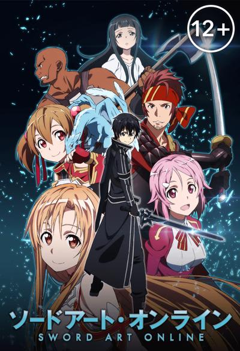
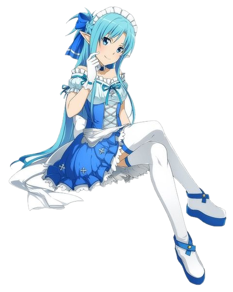
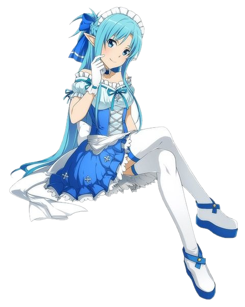

Недалёкое будущее. К 2022 году технологии достигли такого уровня, что сделали возможным Полное Погружение — блокировку информации, поступающей к мозгу от всех пяти органов чувств, перехват сигналов, идущих от мозга к телу и замена этих сигналов «фальшивыми» — сгенерированными компьютером. Полное Погружение было в первую очередь использовано в индустрии компьютерных игр, поскольку позволяло полностью переключить сознание игрока на виртуальный игровой мир.
Sword Art Online (SAO) стала первой выпущенной на рынок VRMMORPG — Virtual Reality Massively Multiplayer Online Role-Playing Game (Массовая многопользовательская онлайн-игра c полным погружением). Виртуальная игровая среда, разработанная компанией «Аргус», представляла собой колоссальную сто уровневую крепость Айнкрад, парящую в небесах. Первый же день игры после двух месяцев бета-тестирования обещал стать событием в мире игровой индустрии и действительно стал им… однако совсем не таким, как хотелось бы общественности и тем более пользователям этой игры. Десять тысяч игроков, вошедших на сервер SAO, внезапно обнаружили отсутствие кнопки «Выйти из системы» в системном меню. Последовавшее позднее объявление от создателя технологии Полного Погружения игры Sword Art Online Акихико Каябы превзошло самые худшие предположения — пользователи были намеренно лишены возможности покинуть виртуальный мир до тех пор, пока кем-нибудь из игроков не будет покорён сотый уровень Айнкрада. Более того — попытка снять шлем виртуального погружения кем-нибудь в реальном мире (ни один из пользователей не смог сделать этого самостоятельно: погружённый в «виртуальность» в реальности не может пошевелить даже пальцем), приводит к мгновенной смерти в результате микроволнового разряда в мозг. И самое худшее — смерть игрового персонажа в виртуальной среде приводит к самой настоящей смерти игрока в реальном мире. Таким образом, десять тысяч человек оказались поставлены перед нелёгким выбором: пройти игру от начала до конца, постоянно рискуя жизнью в схватках с монстрами либо остаться в безопасных зонах, предоставив «играть» другим — сражаться и умирать, один за другим штурмуя уровни крепости Айнкрад. Кадзуто "Кирито" Киригая, игрок-одиночка — один из тех, кто участвовал в закрытом бета-тестировании игры Sword Art Online. Будучи заядлым фанатом компьютерных игр, он оказался в числе десяти тысяч человек, вошедших на сервер SAO в первый день игры и одним из тех, кто оказался в ловушке игрового мира. Приняв решение участвовать в прохождении игры, Кирито, тем не менее, остаётся одиночкой, лишь иногда присоединяясь к другим игрокам, объединившимся в Гильдии — группы, поставившие перед собой цель пройти игру до самого конца. Кирито является одним из игроков высокого уровня, развивающим для своего персонажа искусство одноручного меча и, как выясняется по мере развития событий, уникальный навык «Двух мечей». У Кирито есть веские причины избегать близких связей с людьми — исключение составляют только его отношения с первым заместителем главы гильдии "Рыцари Крови" — Асуной.
 

После того, как Кадзуто смог досрочно завершить игру Sword Art Online, все оставшиеся в живых игроки покинули виртуальный мир Айнкрада… почти все. Триста игроков, среди которых оказалась и возлюбленная Кирито — Асуна, так и не смогли выйти в реальный мир. Индикаторы их шлемов Нервной Передачи (виртуального погружения) по-прежнему показывали, что пользователь присоединён к виртуальному миру, несмотря на то, что сервер игры SAO давно отключен. Несколько месяцев спустя Кадзуто получает от друга скриншот из новой VRMMORPG-игры — Alfheim Online (ALO). На изображении — гигантское подобие золотой птичьей клетки с заключённой внутри девушкой, слишком похожей на Асуну, чтобы быть простым совпадением. Новая игра, Alfheim Online, как следовало из названия, представляла собой «Дом эльфов» — виртуальный мир, населённый вымышленными расами существ, позаимствованными из скандинавской мифологии — сильфами, спригганами, кайт ши, ундинами и др. Цель игры — покорить Иггдрасиль, Мировое Дерево. Где-то на вершине этого дерева и находится золотая клетка с заключённой в ней Асуной. Кирито вновь отправляется в виртуальный мир, твёрдо намеренный освободить её.
После истории с Айнкрадом, программный пакет «Семя Мира», подаренный Кирито Акихико Каябой стал доступен всем желающим, индустрия VRMMORPG-игр, изрядно потрясённая скандалами с SAO и ALO, обрела новую жизнь. Теперь создание виртуальных миров стало доступно сравнительно небольшим компаниям — разработчикам игр и даже сообществам самих игроков. Благодаря их усилиям, удалось сохранить ALfheim Online, едва не закрытую после раскрытия жуткой правды, спрятанной на вершине Иггдрасиля; более того, в виртуальных небесах «мира фей» появилась парящая крепость Айнкрад, восстановленная из остатков данных, найденных в памяти игрового сервера компании «Аргус». Появились также большое количество других VRMMORPG-игр — одна из них, Gun Gale Online (GGO), была сделана для игроков, развивающим владение огнестрельным оружием. Вот только «Game Over» в этой игре мог закончиться настоящей смертью в реальном мире — несколько лучших игроков GGO были найдены мёртвыми в собственных домах. Чтобы узнать, что происходит, Кадзуто отправляется в совершенно незнакомый ему виртуальный мир, где все решает не владение «мечом и магией», а умение быстро стрелять и попадать в цель. Ему нужно найти того, кто, возможно, умеет убивать выстрелом из игрового оружия — игрока, называющего себя «Death Gun».
Кадзуто по совету Кикуока Сэйдзиро (руководитель проекта) подрабатывает в компании RATH и сам того не понимая, участвует в секретном правительственном проекте «Алисизация». Проект «Алисизация» — секретный правительственный проект, цель которого — повысить обороноспособность страны. Проект «Алисизация» использует принципиально новую форму технологии Полного Погружения — Транслятор души. (англ. Soul Translator (STL). В отличие от всех предыдущих виртуальных миров (SAO, ALO, и GGO), виртуальный мир проекта «Алисизация» Подмирье (ориг. Underworld — сокр. от Underground World) не является развлекательной игрой. За три дня погружения в мире Подмирья, Кадзуто проживает внутри него 10 лет своей альтернативной жизни с самого рождения, но по возвращению в реальность память об этом не сохраняется. После этого его смертельно ранит Джонни Блэк, последний член бывшей красной гильдии «Хохочущий гроб». Кикуока решает отправить Кадзуто обратно в Подмирье, так как это единственная возможность восстановить повреждённый мозг. На этот раз Кирито помнит настоящего себя, но в его памяти лишь обрывками всплывают воспоминания альтернативной жизни, в которой у него были друзья детства — Юджио и Алиса.
Юи хочет увидеть кита, выполняя подводное задание вместе с Кирито в «Alfheim Online». Однако в ходе задания выясняется, что Лифа не умеет плавать. Асуна и другие девушки решают тренировать Сугуху в бассейне в реальном мире. А в это время Кадзуто кое-кого встречает...
По ранобэ снимут фильм «Мастер меча онлайн: Прогрессив. Ария в беззвёздной ночи» (Sword Art Online: Progressive. Aria of a Starless Night). Он выйдет в японский прокат в 2021 году. «Ария в беззвёздной ночи» — название истории из первого тома ранобэ «Мастер меча онлайн: Прогрессив». Она рассказывает про первую встречу Кирито и Асуны, а также про бой с боссом Первого этажа. Кирито и Асуну в фильме озвучат прежние сэйю.